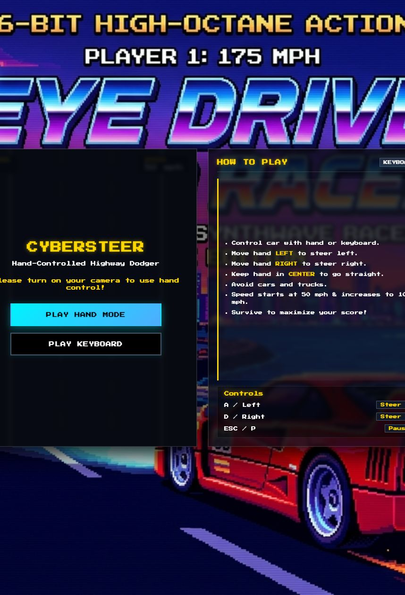
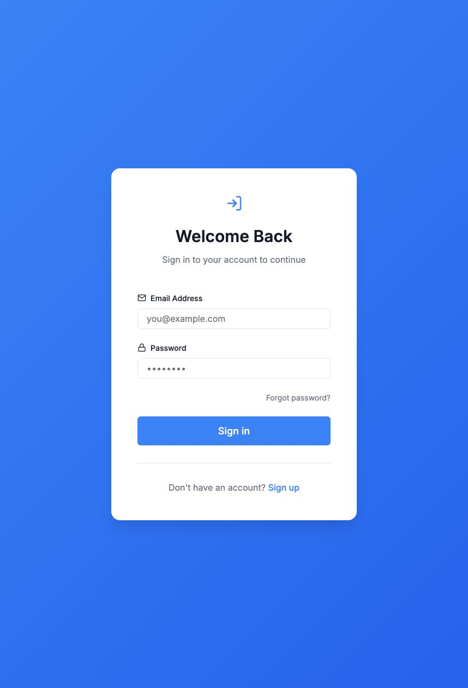
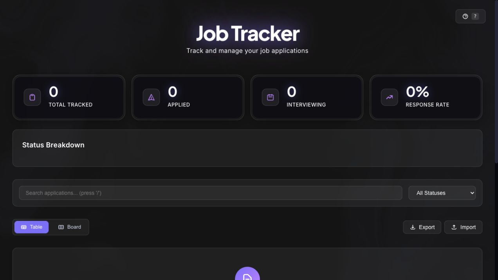
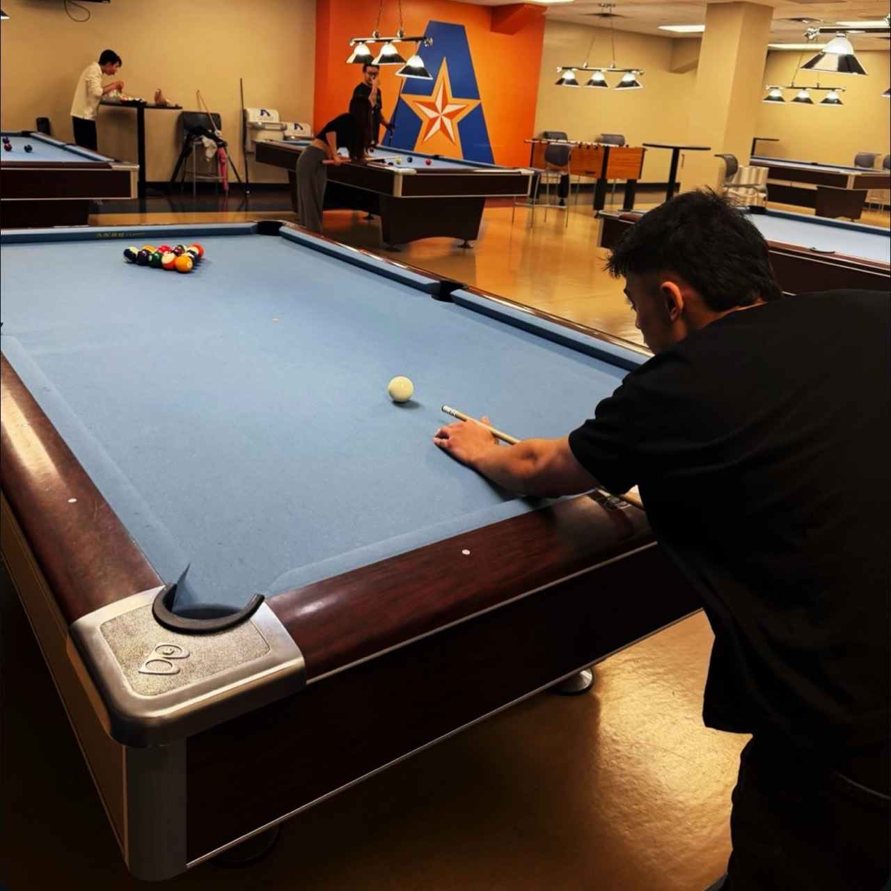

PLAY THE GAME01
CYBERSTEER
Computer vision / Browser game
Steer through highway traffic with your hand or keyboard. Real-time MediaPipe tracking meets a fast-paced Canvas racing game.
COMPUTER SCIENCE STUDENT & DEVELOPER
Curiosity is the starting point.
Building is the next step.
Secure software, intelligent tools, and interactive experiences. Built with purpose. Made to be used.
BEHIND THE SCREEN
I’m Swopnab, a Computer Science student at the University of Texas at Arlington. I turn ideas into full-stack applications, AI assistants, and experiences you can play.

PLAY THE GAMEComputer vision / Browser game
Steer through highway traffic with your hand or keyboard. Real-time MediaPipe tracking meets a fast-paced Canvas racing game.

EXPLORE THE PLATFORMAuthentication / Full-stack platform
A serverless workspace built around secure sign-in, three permission roles, rotating refresh tokens, and isolated user data.

TRY THE TRACKERProductivity / Web application
Keep applications, interviews, and follow-ups in one place. A responsive tracker with table and board views and browser-based storage.
A personal AI assistant with persistent memory, screenshot OCR, and document retrieval. Built with Flask, SQLite, and local Ollama inference.
Skills on the left. Tools on the right.
A toolkit shaped by building real things.
Python, Java, C, C++, JavaScript, TypeScript, SQL
FROM AN IDEA TO WORKING CODEVS Code, Git, GitHub, Linux, Postman, Figma
WRITE · VERSION · DEBUGReact, Node.js, Express, Django REST Framework, Flask, Hono, REST APIs
SEE IT IN JOB TRACKER ↗Vite, Docker, Kubernetes, GitHub Actions, Wrangler
BUILD · TEST · DEPLOYLLMs, retrieval-augmented generation, persistent memory, hand tracking
EXPLORE ZABUM AI ↗Ollama, OpenAI API, LangChain, MediaPipe, PyTorch, TensorFlow, Scikit-learn
CONTEXT · INFERENCE · VISIONJWT authentication, RBAC, refresh-token rotation, cloud storage, data isolation
EXPLORE SWOPMOBILE ↗AWS S3 / IAM, Cloudflare Workers / D1, SQLite, GitHub Pages
STORE · SECURE · SCALEProfessional Certificate
Microsoft & LinkedIn
Microsoft & LinkedIn
Professional Certificate
Also: Excel Essential Training (Microsoft 365)
Quiet focus. Unlimited possibilities.
THE DEVELOPER ALTER EGO
A little Jujutsu energy, a lot of code.
Meet the playful alter ego behind the portfolio.
One idea enters. A whole world of possibilities opens.
Inside this domain, the techniques become real projects.
A change of scenery.
A different kind of focus.

LET’S MAKE SOMETHING MATTER
Open to internships, collaborations, and interesting projects. Have something in mind?
LET’S TALK ↗swopnabbikram@gmail.com